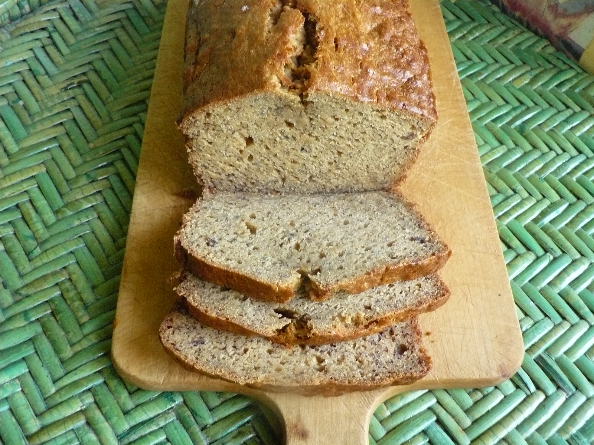

Potatoes and Peppers

Description
Why compromise the banana flavor?
This banana bread is moist and delicious with loads of banana flavor!
Friends and family love my recipe and say it's by far the best! It's wonderful toasted!! Enjoy!
Ingredients:
- 2 cups all-purpose flour
- 1 teaspoon baking soda
- ¼ teaspoon salt
- ½ cup butter
- ¾ cup brown sugar
- 2 eggs, beaten
- 2 ⅓ cups mashed overripe bananas
Directions
- Preheat oven to 350 degrees F (175 degrees C). Lightly grease a 9x5 inch loaf pan.
- In a large bowl, combine flour, baking soda and salt.
- In a separate bowl, cream together butter and brown sugar.
- Stir in eggs and mashed bananas until well blended.
- Stir banana mixture into flour mixture; stir just to moisten.
- Pour batter into prepared loaf pan.
- Bake in preheated oven for 60 to 65 minutes, until a toothpick inserted into center of the loaf comes out clean.
- Let bread cool in pan for 10 minutes, then turn out onto a wire rack.